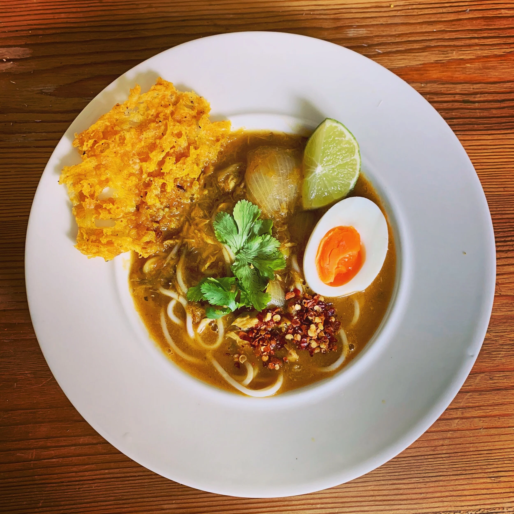

Monthinga (sometimes spelled Mont Hin Ga) is the beloved
national dish of Myanmar. It is a hearty, comforting soup made with
a rich, savory fish broth and thin rice noodles,
traditionally served for breakfast.